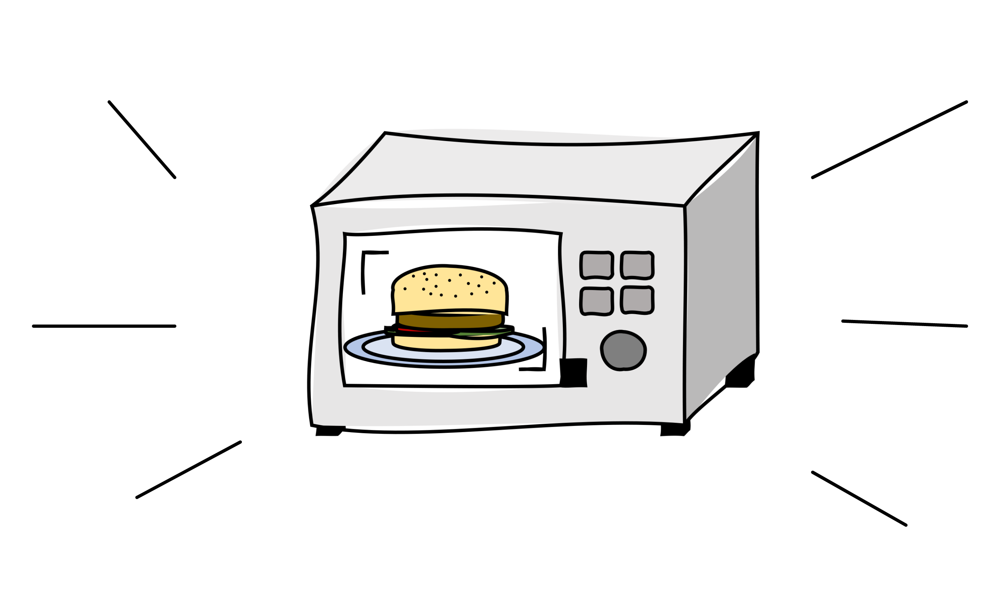

<div style="width: 100%; height: 300px; border: 3px solid black; margin-top: -3px;
display: flex; flex-wrap: wrap-reverse; justify-content: center;
align-items: center;
">

  <div class="main-label">
    ما بتعرفش تطبخ تكنولوجي وعاوز المعلومة
    <br>
    سريعة ،

    سخنة ولزيزة من الآخر؟ 👩🏻‍🍳
  </div>

  <div>
    
  </div>
</div>

